<div class="teste">
    <nav class="navbar navbar-light bg-light shadow rounde fixed-top">
        <div>
            <button type="button" class="btn toggle-btn" (click)="toggleSidebar()">
                
            </button>

            <a class="navbar-brand px-4">CT Junior</a>
        </div>

        <button class="btn btn-outline-light" type="button" (click)="fazerLogout()">Sair</button>
    </nav>

    <ng-sidebar-container>
        <ng-sidebar [(opened)]="opened" position="left" showBackdrop="true" closeOnClickBackdrop="true">
            <div class="sidebar-itens">
                <button type="button" class="btn sidebar-item">Dashboard</button>
                <button type="button" class="btn sidebar-item">Login</button>
                <button type="button" class="btn sidebar-item">Cadastro</button>
                <button type="button" class="btn sidebar-item">Teste</button>
                <button type="button" class="btn sidebar-item">Teste</button>
                <button type="button" class="btn sidebar-item">Teste</button>
                <button type="button" class="btn sidebar-item">Teste</button>
            </div>
        </ng-sidebar>

        <!-- <div ng-sidebar-content>
            <app-dashboard></app-dashboard>
        </div> -->
    </ng-sidebar-container>
</div>